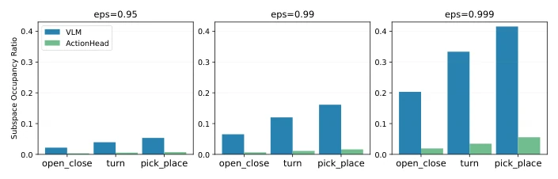
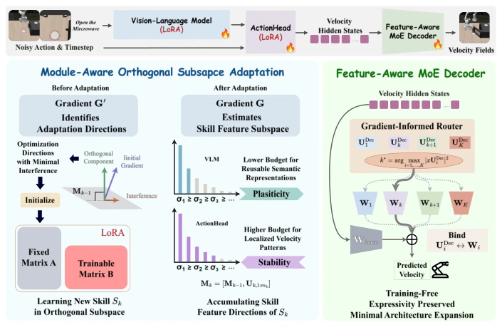
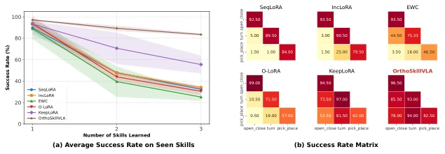
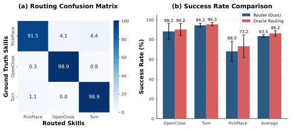
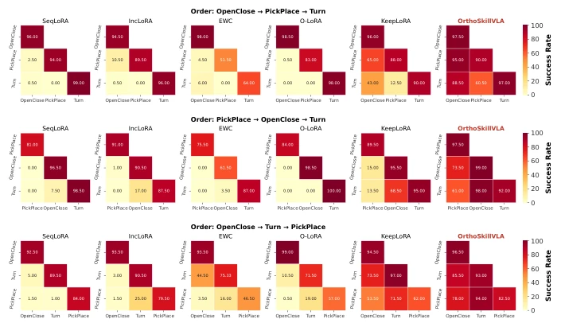
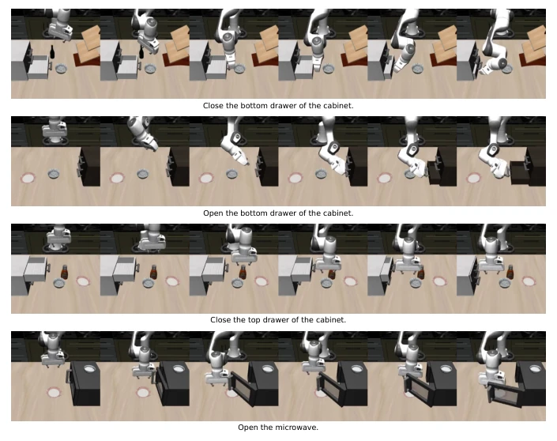
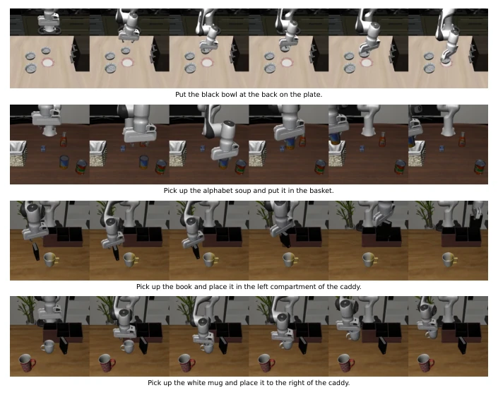
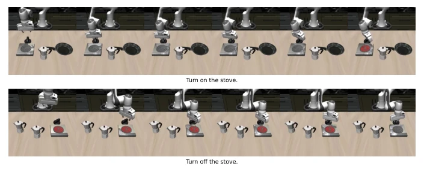
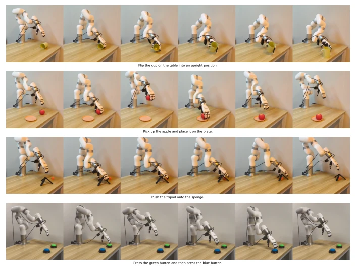

This paper directly addresses the persistent forgetting problem in continual learning for VLA models, attempting to mitigate it using orthogonal subspace constraints. The authors keenly point out that existing methods (such as KeepLoRA [14]) treat VLM and ActionHead equally, ignoring the heterogeneity where the former requires semantic capacity while the latter requires speed accuracy, leading to a trade-off where one is sacrificed for the other. OrthoSkillVLA attempts to balance stability and plasticity through module-aware budget and an MoE decoder. Real-robot verification is a plus, but whether the training-free routing mechanism is robust under feature distribution drift remains questionable. Additionally, the choice of LoRA rank is sensitive to performance; too large a rank increases forgetting, indicating that orthogonal constraints are not a panacea. The overall idea is clear, but gradient noise handling during practical deployment is not deeply explored, and it relies on the X-VLA [28] architecture, with generalizability yet to be verified.
When pre-trained VLA models sequentially adapt to new skills, parameter updates perturb the velocity field mappings of old skills, triggering catastrophic forgetting. Existing architecture methods (such as [17, 25]) alleviate forgetting by isolating skill paths, but this causes the inference footprint to expand with skill accumulation, making it unsuitable for resource-constrained real-time robots. Subspace constraint methods (such as [14]) maintain a constant architecture, but unified constraints ignore differences in VLA internal components. VLM maintains general semantics and is easily exhausted; ActionHead handles local velocity patterns and is easily perturbed. Under unified thresholds, protecting ActionHead sacrifices VLM plasticity, and vice versa. Additionally, as the output layer, the velocity decoder, freezing limits expressiveness, while updating covers old mappings, forming a bottleneck. There is a need to specifically address module heterogeneity and the output bottleneck.

Fig. 3. Evolution of SOR under varying unified energy thresholds.
The OrthoSkillVLA framework consists of three steps. First, estimate the skill subspace based on accumulated gradients, use SVD to filter new feature directions, and retain vectors with reconstruction error satisfying the threshold as the basis. Second, implement a module-aware budget, where VLM adopts a loose threshold epsilon_VLM to preserve semantic plasticity, and ActionHead adopts a strict threshold epsilon_Head to preserve speed accuracy. When updating LoRA, the A matrix is initialized to residual gradient singular vectors, the B matrix is optimized, ensuring updates occur in the orthogonal complement space of the historical basis. Finally, targeting the speed decoder bottleneck, introduce a Feature-Aware MoE, assigning an independent Expert to each new skill, while the Base decoder is frozen. During inference, a training-free projection router selects the Expert based on feature space affinity (projection magnitude), requiring no additional training parameters. Specifically, the router calculates the projection of the test representation against the historical basis and selects the maximum. Decoder parameters account for only 0.01% of the model, with minimal overhead.

Fig. 1. Overview of OrthoSkillVLA. For the VLM and ActionHead, OrthoSkillVLA constrains new skill learning to gradient-informed orthogonal subspaces with module- specific budgets, preserving reusable semantic capacity while protecting localized ve- locity patterns. For the final velocity decoder, it allocates a compact expert for each skill, and selects experts through a training-free projection router based on feature- space affinity.
Conduct skill incremental experiments on the LIBERO benchmark (OpenClose, PickPlace, Turn), comparing against SeqLoRA, KeepLoRA, etc. Metrics include FWT, NBT, AUC, and Final SR. OrthoSkillVLA achieves 83.50% on Final SR, significantly outperforming KeepLoRA's 56.61%. NBT drops to 0.13, demonstrating excellent forgetting control. Real-robot experiments on xArm verify Flip, Pick, Push, and Press skills, with 20 independent trials per skill. Retention rates are higher. Ablation studies show that separated thresholds and MoE are both critical, with performance dropping under unified thresholds. Routing accuracy is 98.9%, approaching the Oracle. LoRA rank of 64 is optimal, while too large a rank leads to increased forgetting.

Fig. 2. Simulation results under skill-incremental continual learning. (a) Average suc- cess rate on seen skills. (b) Skill-wise success matrices across learning phases.

Fig. 4. Evaluation of the training-free routing mechanism on routing accuracy (a) and success rate comparison with oracle routing (b) in our simulated benchmark.

Fig. 5. Qualitative comparison of model performance under the three skill orderings used in the simulated continual learning experiments.
其他图片Other Figures

Fig. 6. Visualization of the tasks in skill OpenClose.

Fig. 7. Visualization of the tasks in skill PickPlace.

Fig. 8. Visualization of the tasks in skill Turn.

Fig. 9. Visualization of the four real-world skills, with each row showing keyframes from an autonomous rollout of Flip, Pick, Push, and Press.